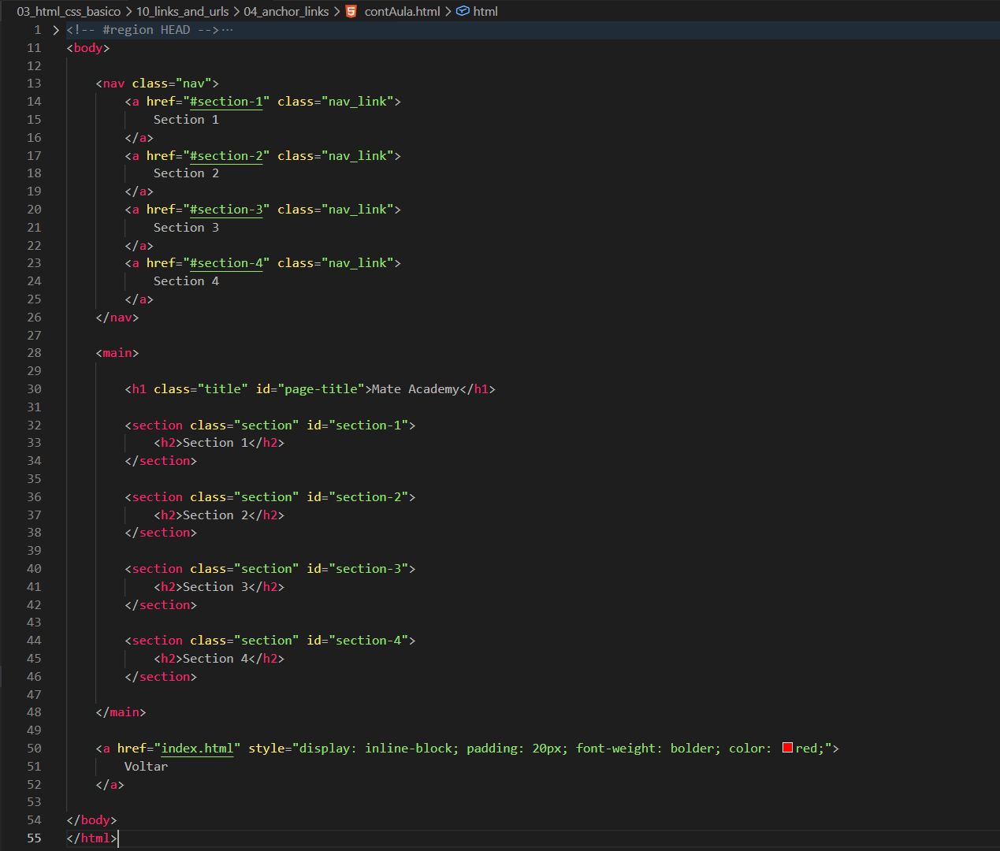
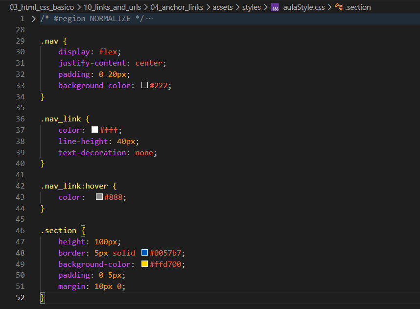
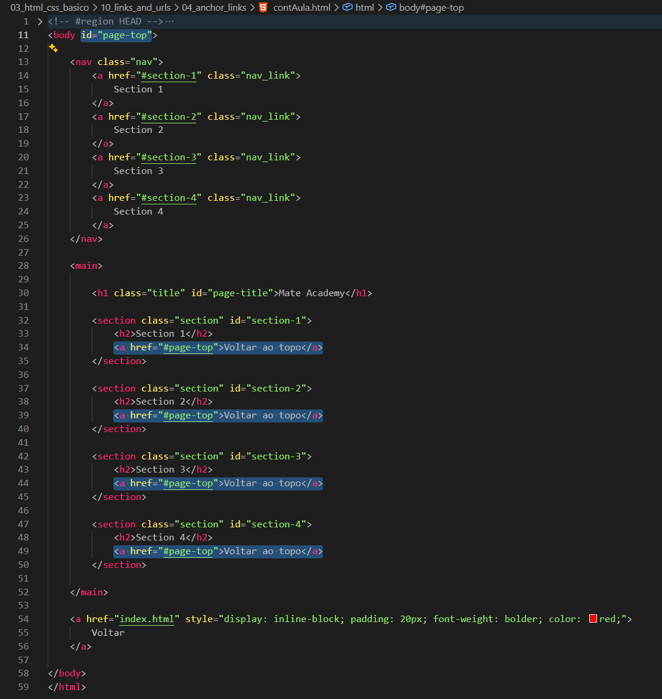

Anchor Links
Introdução
Aqui veremos como funciona a navegação dentro da própria página utilizando âncoras.
Aqui veremos como funciona a navegação dentro da própria página utilizando âncoras.
HTML:

CSS:

No código, temos um menu de navegação com 4 seções, onde cada link leva para sua respectiva parte da página.
Ao clicar, por exemplo, em section 4, a página não é recarregada. Em vez disso, somos direcionados diretamente para o ponto onde essa seção está.
Por padrão, esse movimento acontece de forma instantânea (um salto). Porém, podemos suavizar essa navegação usando CSS.
Podemos adicionar essa propriedade no CSS, geralmente no html:
html { scroll-behavior: smooth; }
Isso faz com que a navegação entre as seções aconteça de forma suave.
Também podemos criar um link para voltar ao topo da página, utilizando o mesmo conceito de âncoras.
Para isso, basta adicionar um id no topo (por exemplo, no body ou no primeiro elemento) e referenciar esse id no href.

Também podemos alterar o estilo da seção atual utilizando a pseudo-classe :target.
Essa pseudo-classe é aplicada ao elemento cujo id corresponde ao fragmento da URL (o que vem após o #).
Com isso, conseguimos destacar visualmente a seção ativa.